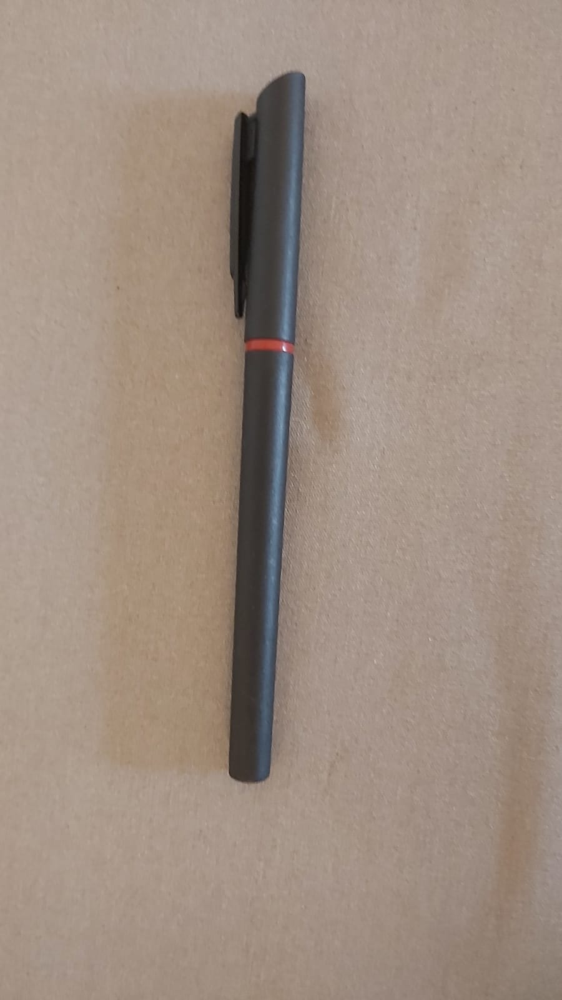
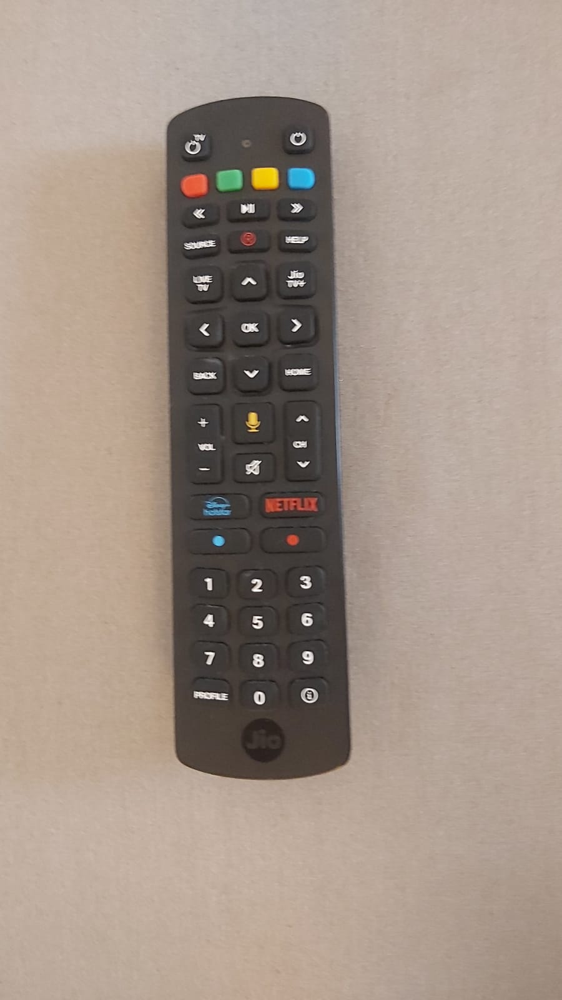
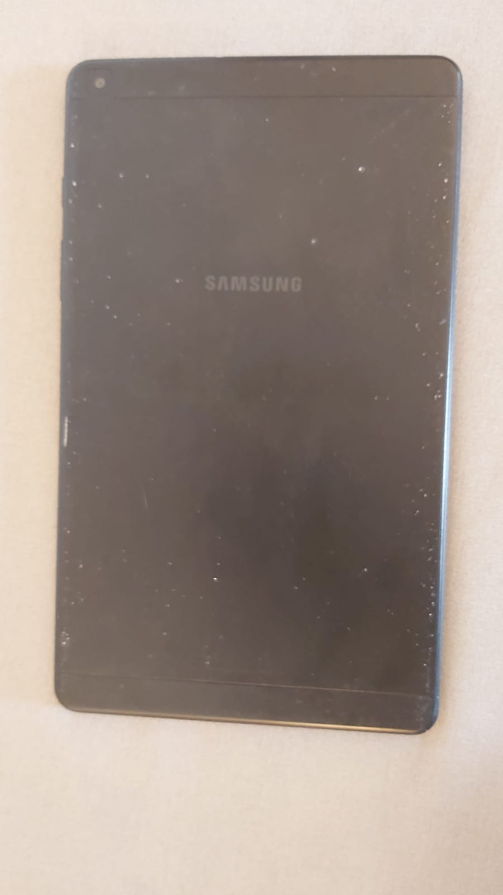
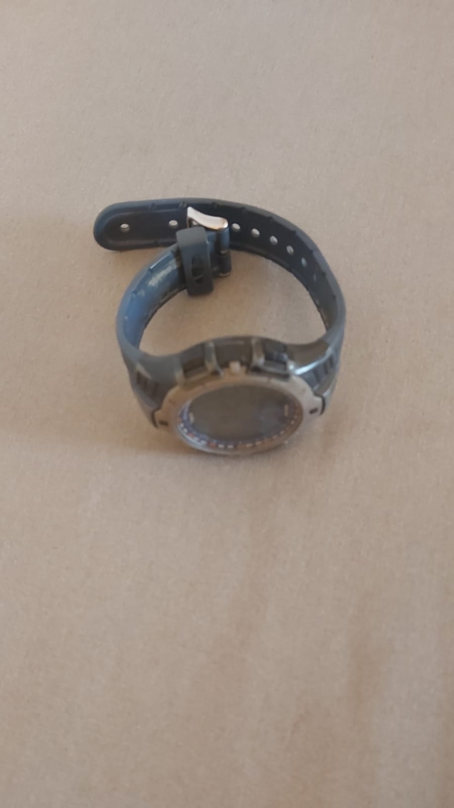

Case Study Between 'Google Lens' and 'Mobile Net'
I Have Tested 5 Images Given Below From Google Lens And Mobile Net. Google Lens Has Provided More Accurate Results Than Mobile Net.
Image1 -

Result in Google Lens - Diary Of A Wimpy Kid Book
Result in Mobile Net - Packet
Conclusion-
Google Lens Is More Accurate
Image2 -

Result in Google Lens - Metal Pen
Result in Mobile Net - Ski Mask
Conclusion-
Google Lens Is More Accurate
Image3 -

Result in Google Lens - Universal Remote
Result in Mobile Net - Remote
Conclusion-
Both Are Equally Accurate
Image4 -

Result in Google Lens - Samsung Galaxy Tab A (8.0)
Result in Mobile Net - Television
Conclusion-
Google Lens Is More Accurate
Image5 -

Result in Google Lens - Timex Watch
Result in Mobile Net - Spotlight
Conclusion-
Google Lens Is More Accurate